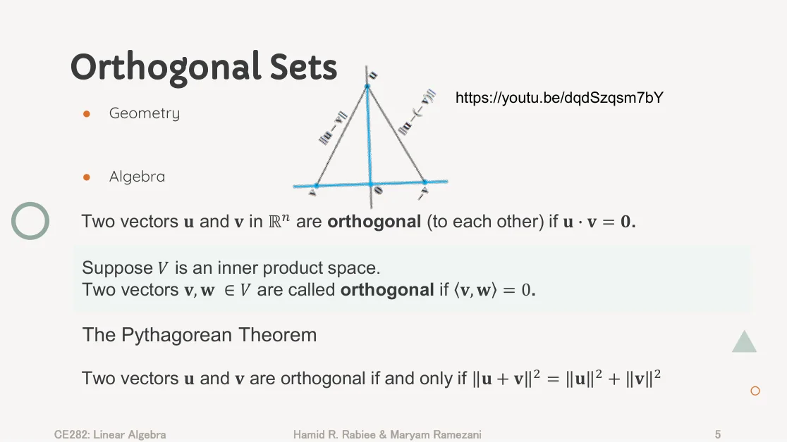
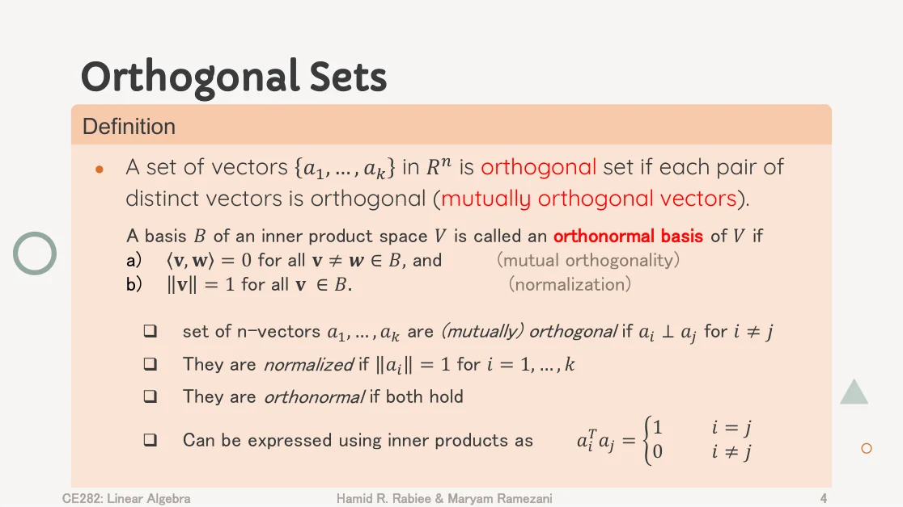
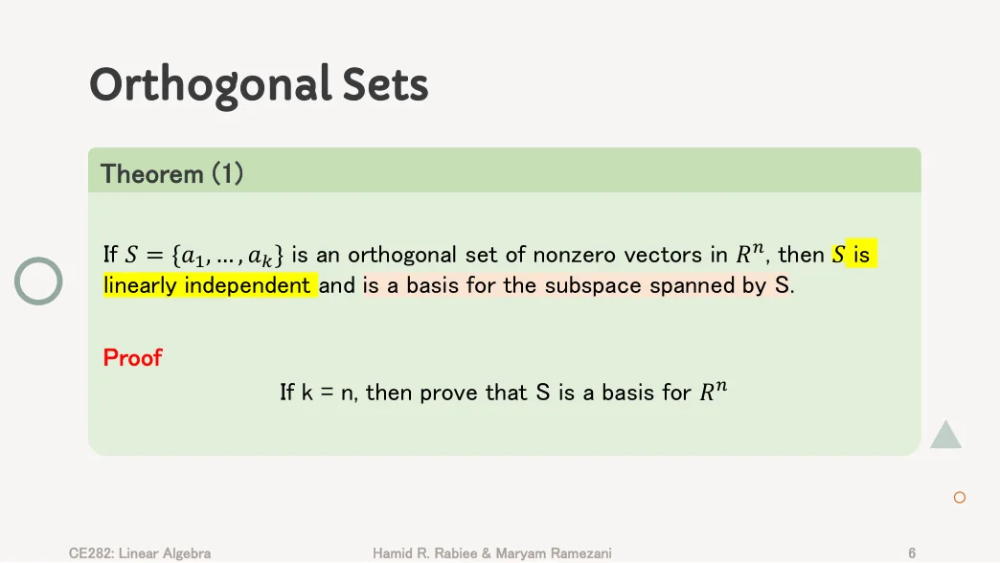
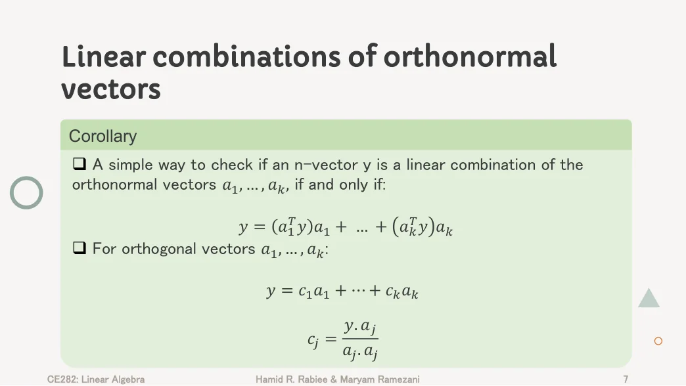
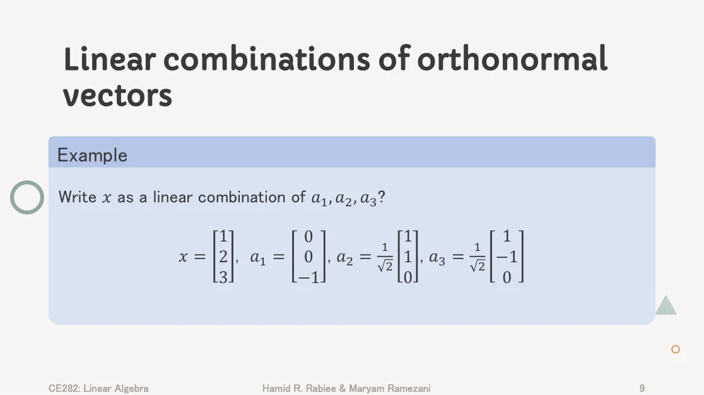

فصل ۹ — Orthogonality
بخش ۱: Orthogonal Sets — مجموعههای متعامد
نقطهٔ شروع فصل ۹: وقتی ضرب داخلی را میدانیم، تعامد یعنی صفر شدن آن. این تعریف از پیکانهای دوبعدی فراتر میرود: دو ماتریس یا دو تابع هم ممکن است نسبت به ضرب داخلی انتخابشده بر هم عمود باشند.
در ضرب داخلی استاندارد و برای دو بردار غیرصفر:
\[\langle u,v\rangle=\|u\|\|v\|\cos\theta.\]
بنابراین ضرب داخلی صفر به معنای \(\theta=90^\circ\) است. بردار صفر به تعریف جبری بر هر برداری عمود است؛ ولی برای بردار صفر «زاویهٔ هندسی» تعریف نمیکنیم.
اسلایدهای ۴ تا ۹
۱. تعامد دو بردار

دو بردار وقتی متعامدند که ضرب داخلی آنها صفر باشد:
\[ \boxed{\langle u,v\rangle=0} \]
در فضای حقیقی با ضرب داخلی استاندارد:
\[ u^Tv=0 \]
مثلاً:
\[ u=(1,2,-1),\qquad v=(2,-1,0) \]
داریم:
\[ u^Tv=2-2+0=0 \]
پس این دو بردار متعامدند.
۲. رابطهٔ تعامد و فیثاغورس
در فضای ضرب داخلی حقیقی:
\[ \boxed{ u\perp v\iff \|u+v\|^2=\|u\|^2+\|v\|^2 } \]
چرا؟
\[ \|u+v\|^2 =\|u\|^2+2\langle u,v\rangle+\|v\|^2 \]
پس رابطهٔ فیثاغورس وقتی برقرار میشود که ضرب داخلی صفر باشد.
نکتهٔ دقیق: در فضای مختلط، از این تساوی فقط صفر بودن قسمت حقیقی ضرب داخلی نتیجه میشود. برای نتیجه گرفتن تعامد، باید قسمت موهومی را هم بررسی کنیم.
۳. مجموعهٔ متعامد و متعامد یکه

اگر بردارهای یک مجموعه دو به دو بر هم عمود باشند، مجموعه متعامد است.
اگر علاوه بر تعامد:
\[ \|v_i\|=1 \]
داشته باشیم، مجموعه Orthonormal است.
فرمول فشرده:
\[ \boxed{ \langle q_i,q_j\rangle=\delta_{ij} } \]
۴. چرا بردارهای متعامد ناصفر مستقل خطیاند؟

فرض کن:
\[ c_1v_1+\cdots+c_kv_k=0 \]
از هر دو طرف با \(v_j\) ضرب داخلی بگیر:
\[ c_j\langle v_j,v_j\rangle=0 \]
چون \(v_j\neq0\):
\[ c_j=0 \]
پس تمام ضرایب صفرند و مجموعه مستقل خطی است.
بنابراین در \(\mathbb R^n\) حداکثر \(n\) بردار متعامد ناصفر میتوانیم داشته باشیم.
چرا با تعامد، حل دستگاه ضرایب آسان میشود؟
فرض کنیم \(y=\sum_{i=1}^k c_i a_i\) و بردارهای \(a_i\) متعامد و غیرصفر باشند. با ضرب داخلی گرفتن از دو طرف با \(a_j\)، همهٔ جملهها بهجز یکی ناپدید میشوند:
\[ \langle y,a_j\rangle =\sum_{i=1}^k c_i\langle a_i,a_j\rangle =c_j\|a_j\|^2. \]
پس \(c_j=\langle y,a_j\rangle/\|a_j\|^2\)، و اگر پایه یکه باشد، مخرج ۱ میشود. به همین دلیل ساختن پایهٔ متعامد یکه مفید است: ضرایب را به جای حل دستگاه با چند ضرب داخلی مییابیم.
دقت منطقی: اگر \(y\) خارج از \(\operatorname{span}\{a_i\}\) باشد، رابطهٔ \(y=\sum c_ia_i\) درست نیست؛ آن جمع تصویر عمودی \(y\) روی زیرفضاست. در بخش مکمل متعامد این تفاوت را دقیق میبینیم.
۵. مختصات نسبت به پایهٔ متعامد یکه

اگر:
\[ x=c_1q_1+\cdots+c_kq_k \]
آنگاه:
\[ \boxed{c_i=\langle x,q_i\rangle} \]
برای پایهٔ متعامد ولی غیریکّه:
\[ \boxed{ c_i=\frac{\langle x,v_i\rangle}{\|v_i\|^2} } \]
مثال خود اسلاید ۹

در اسلاید داده شده:
\[ x=\begin{bmatrix}1\\\2\\\3\end{bmatrix} \]
\[ a_1=\begin{bmatrix}0\\\0\\\\-1\end{bmatrix} \]
\[ a_2=\frac1{\sqrt2} \begin{bmatrix}1\\\1\\\0\end{bmatrix}, \qquad a_3=\frac1{\sqrt2} \begin{bmatrix}1\\\\-1\\\0\end{bmatrix} \]
میخواهیم \(x\) را به صورت ترکیب خطی این بردارها بنویسیم.
این سه بردار متعامد یکهاند، پس مستقیماً ضرایب را با ضرب داخلی به دست میآوریم.
\[ c_1=a_1^Tx=-3 \]
\[ c_2=a_2^Tx=\frac{1+2}{\sqrt2}=\frac3{\sqrt2} \]
\[ c_3=a_3^Tx=\frac{1-2}{\sqrt2}=-\frac1{\sqrt2} \]
پس:
\[ \boxed{ x=-3a_1+\frac3{\sqrt2}a_2-\frac1{\sqrt2}a_3 } \]
این همان روش موردنظر اسلاید است: بهجای حل دستگاه، ضرایب را مستقیماً از ضرب داخلی پیدا میکنیم.
مثال اضافهٔ ۱: پایهٔ متعامد ولی غیریکّه
\[ v_1=(1,1),\qquad v_2=(1,-1) \]
و:
\[ x=(4,2) \]
داریم:
\[ \|v_1\|^2=\|v_2\|^2=2 \]
پس:
\[ c_1=\frac{x^Tv_1}{2}=\frac62=3 \]
\[ c_2=\frac{x^Tv_2}{2}=\frac22=1 \]
در نتیجه:
\[ \boxed{x=3v_1+v_2} \]
مثال اضافهٔ ۲: تشخیص پایه بودن
آیا سه بردار زیر پایهٔ \(\mathbb R^3\) هستند؟
\[ v_1=(1,1,0),\quad v_2=(1,-1,0),\quad v_3=(0,0,2) \]
ضرب داخلی هر دو بردار متفاوت صفر است.
هیچکدام هم صفر نیستند.
پس سه بردار مستقل خطی در فضای سهبعدی داریم و بنابراین یک پایهاند.
برای متعامد یکه کردنشان کافی است هر کدام را بر نرمش تقسیم کنیم:
\[ q_1=\frac{v_1}{\sqrt2},\quad q_2=\frac{v_2}{\sqrt2},\quad q_3=(0,0,1) \]
مثال خطای رایج: متعامد هست، اما پایهٔ کل فضا نیست
\(v_1=(1,0,0)\) و \(v_2=(0,1,0)\) هم متعامدند، هم یکه؛ اما فقط صفحهٔ \(xy\) را میسازند، نه \(\mathbb R^3\). برای پایهٔ کامل باید یک جهت سوم، مثلاً \((0,0,1)\)، اضافه کنیم.
نسخهٔ مختلط قضیهٔ فیثاغورس
در فضای مختلط داریم:
\[\|u+v\|^2=\|u\|^2+\|v\|^2+2\operatorname{Re}\langle u,v\rangle.\]
پس تنها از برقرار بودن معادلهٔ فیثاغورس نمیتوان نتیجه گرفت ضرب داخلی صفر است؛ فقط قسمت حقیقی آن صفر میشود. برای مثال در \(\mathbb C\)، بردارهای \(u=1\) و \(v=i\) رابطهٔ فیثاغورس را ارضا میکنند، ولی \(\langle1,i\rangle=i\ne0\) با قرارداد \(x^Hy\). این استثنا در سؤالهای مفهومی ارزش زیادی دارد.